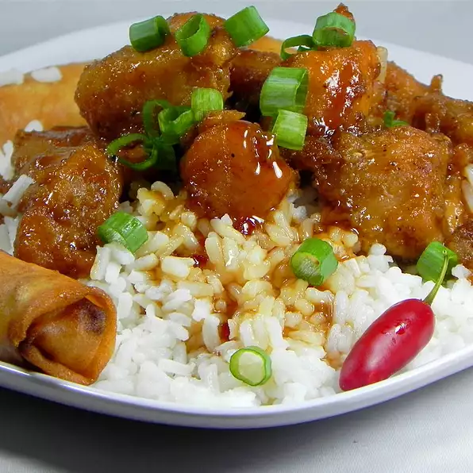

General Tso's Chicken

Description
General Tso's chicken is a sweet and spicy deep-fried chicken dish that is served in North American Chinese restaurants.
Ingredients
- 1/2 cup cornstarch
- 1/4 cup water
- 1 1/2 teaspoons minced garlic
- 1 1/2 teaspoons minced fresh ginger root
- 3/4 cup white sugar
- 1/4 cup soy sauce
- 1/4 cup white wine vinegar
- 1/2 cup hot chicken broth
- 1 teaspoon monosodium glutamate (MSG)
- 3 pounds skinless, boneless chicken breast halves, cut into bite size pieces
- 1/2 cup soy sauce
- 1 teaspoon ground white pepper
- 1 egg
- 1 cup cornstarch
- 1 cup vegetable oil
- 2 cups chopped green onions
- 16 chile peppers, sun-dried
Steps
- To Make Sauce: In a large bowl combine 1/2 cup cornstarch and 1/4 cup water. Mix together. Add garlic, ginger, sugar, 1/4 cup soy sauce and white wine vinegar. Then add chicken broth and monosodium glutamate and stir all together until sugar dissolves. Refrigerate until needed.
- To Prepare Chicken: In a separate bowl, combine chicken, 1/2 cup soy sauce and white pepper. Stir in egg. Add 1 cup cornstarch and stir until chicken is evenly coated. Add oil to help separate chicken pieces. Divide chicken into small quantities and deep fry at 350 degrees F (175 degrees C) until crispy. Drain on paper towels.
- To Make Mixture: Place a small amount of oil in wok and heat until wok is hot. Add scallions and dried chile peppers and stir-fry briefly. Remove sauce from refrigerator and stir. Add sauce to wok. Then add fried chicken and cook until sauce thickens (add cornstarch or water as needed until sauce is as thick as you like it).